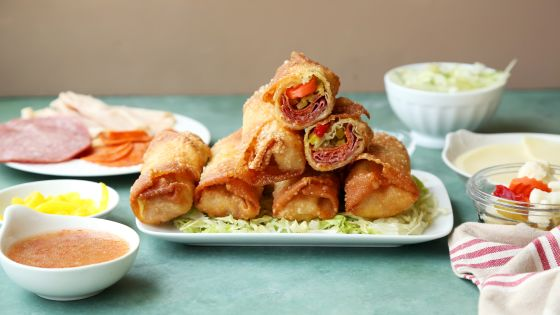

Fill a pot or skillet with high sides halfway up with oil and bring to 365 degrees F. Place the egg roll wrappers at an angle on a clean work surface. Lay slices of cheese and a bit of each deli meat in the center. Top with pepperoni, lettuce and a dash of oregano. Bring the corners into the center, over the filling, and roll into a tight log. Seal the edge with a bit of egg wash and place on a platter or baking sheet. Continue rolling the rest of the egg rolls in the same manner. Working in batches, fry rolls until golden brown, about 2-3 minutes per side. # Drain on paper towels and serve with Italian dressing on the side for dipping

“I want to show you what an incredible showstopper whole sides of salmon can make. So, next time you’ve got friends coming over, treat them (and yourself ) to this wonder – all the beautiful flavours from the stuffing mingle with the fish and smoky bacon to create a taste sensation that you have to eat to believe! A perfect weekend feast. ” SERVES 12 TO 14 COOKS IN1H 25M PLUS RESTING DIFFICULTY NOT TOO
Preheat the oven to 220ºC/425ºF/gas 7. Line a large baking tray with greaseproof paper and rub with a little oil. Lay 8 pieces (roughly an arm’s length each) of butcher’s string at 5cm intervals width ways across the tray, then place one salmon fillet on top, skin side down. Toast the almonds in a dry frying pan until golden, tossing regularly, then tip into a food processor. Peel, roughly chop and add the garlic, finely grate in the lemon zest, then tear in the ciabatta. Season with black pepper, then pulse until finely chopped. Carefully layer the crumbs over the salmon. Halve 1 lemon. Trim the fresh artichoke stalks 2cm from the base. Peel away the tough outer leaves until you reach the paler ones that are tender enough to eat, then trim the heads to 3cm, rubbing with the cut lemon as you go to prevent discoloration. Halve them, scoop out and discard the hairy chokes, then finely slice. Drain and roughly slice the jarred artichoke hearts, reserving the oil. Drizzle 1 tablespoon of artichoke oil into a large frying pan on a high heat and fry all the artichokes for 2 minutes. Pick and roughly chop the mint leaves, scatter into the pan, then remove from the heat. Spoon the artichoke mixture evenly over the breadcrumb layer, drizzle with 1 more tablespoon of artichoke oil, then lay the other salmon fillet on top, skin side up. Arrange the bacon on top in a criss-cross pattern, and sprinkle over the thyme sprigs. Tie the string up and around both fillets to secure the filling. Drizzle over a little extra artichoke oil and sprinkle any excess crumbs back over. Place in the middle of the oven and immediately reduce the temperature to 180ºC/350ºF/gas 4. Roast for 35 to 40 minutes, or until the bacon and salmon skin are golden and crisp. Rest for 10 minutes, then serve with lemon wedges for squeezing over. Delicious with buttered new potatoes and a crisp green salad.